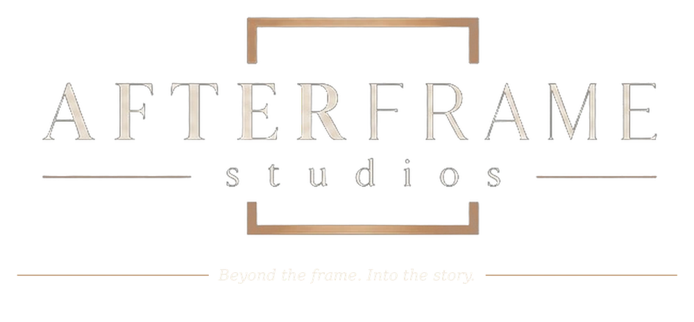
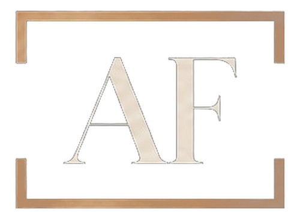

Cinema
Immagini, suono, ritmo e atmosfera.

INDEPENDENT INTERACTIVE STORYTELLING STUDIO
Non raccontiamo soltanto storie da guardare.
Creiamo storie da attraversare.
AFTERFRAME studios nasce dalla passione per il cinema e la letteratura e dal desiderio di esplorarne nuove possibilità attraverso l'interattività.
Uniamo linguaggio cinematografico, sensibilità letteraria e narrazione interattiva per creare storie in cui le decisioni del pubblico possono cambiare il corso degli eventi.
Non vogliamo soltanto raccontare una storia. Vogliamo aprire la possibilità di viverla in modi diversi.
Durante un film o un romanzo, immaginiamo spesso strade alternative: una decisione diversa, un incontro mancato, una conseguenza inattesa. La storia, però, continua lungo il percorso che è stato scritto.
Chi guarda o legge interpreta, immagina e si immedesima. Il coinvolgimento è già attivo, ma il corso degli eventi resta generalmente fuori dal suo controllo.
Noi vogliamo esplorare ciò che accade quando a questa partecipazione emotiva si aggiunge la possibilità di decidere: scegliere, assumersi il peso di una conseguenza e scoprire dove conduce un'altra strada.
Non soltanto assistere a ciò che accade. Contribuire a decidere ciò che accadrà.
Immagini, suono, ritmo e atmosfera.
Personaggi, profondità e possibilità narrative.
Scelte che aprono strade e conseguenze differenti.
Siamo uno studio indipendente e immaginiamo AFTERFRAME come uno spazio creativo aperto, destinato a crescere insieme alle storie e alle persone che contribuiranno a realizzarle.
Stiamo lavorando alla prima esperienza AFTERFRAME. Il catalogo si aprirà qui, quando sarà pronta per essere vissuta.

Nessuna storia è ancora disponibile. Preferiamo aspettare il momento giusto per aprire il sipario.
Le nostre storie nascono per essere esplorate. Una decisione può cambiare una relazione, rivelare un dettaglio o condurre verso un finale inatteso.
Ogni esperienza è pensata come un piccolo racconto audiovisivo: breve, intenso e personale.
AFTERFRAME è all'inizio del suo percorso. Se vuoi parlarci di un'idea, una collaborazione o semplicemente seguire il progetto, questo è il posto giusto.
Prepara un messaggio per AFTERFRAME. In questa versione di anteprima i dati restano sul tuo dispositivo: nulla viene inviato o salvato.